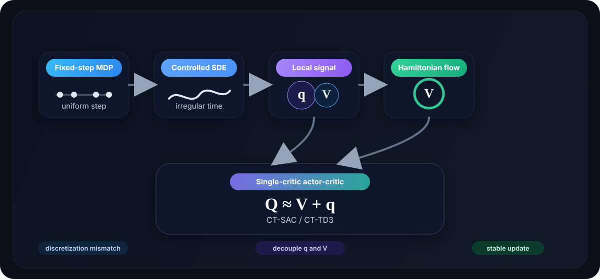

Formulation
We start from the failure of fixed-step MDP abstractions under mixed time scales, move to controlled diffusions and instantaneous advantage-rate signals, and then replace discrete backups by a Hamiltonian value flow.

From fixed-step MDPs to controlled diffusions
The starting point is the usual discrete-time Markov decision process with step size $\Delta$:
When the increment is approximately linear in $\Delta$, the small-step limit becomes an ODE after averaging over randomized actions. If one also adds mean-zero perturbations with variance of order $\Delta$, the accumulated fluctuations converge to Brownian motion and the limit becomes an Itô diffusion. This leads to the controlled SDE used throughout the work:
Under a Markov feedback policy $a_t\sim\pi(\cdot\mid X_t)$, the entropy-regularized objective is
This stochastic-control viewpoint is the right setting when trajectories mix very short and much longer holding intervals, because the learning problem should depend on the underlying continuous-time system, not on a single arbitrary discretization.
Generators and Hamiltonians
For a fixed action $a$, the controlled infinitesimal generator acts on a smooth test function $\varphi$ by:
This is the continuous-time analogue of a one-step Bellman drift. Using it, the action-wise Hamiltonian becomes:
The hard Hamiltonian is $H^{(0)}(V)(x)=\sup\limits_{a\in\mathcal A} H_a(V)(x)$, while the entropy-regularized soft Hamiltonian is:
Under standard assumptions, the optimal value function satisfies the HJB equation $H^{(\alpha)}(V^{(\alpha)})(x)=0$. So the Hamiltonian is the object that encodes local control improvement in continuous-time.
Why the continuous-time signal is $q$, not $Q$
In discrete-time, the action-value function $Q$ ranks actions directly and supports updates such as $V(x)=\max_a Q(x,a)$. In continuous-time, however, the ordinary $Q$-function collapses to the value function as the step size shrinks, so the action ranking disappears in the limit. To restore action dependence, we need the instantaneous advantage-rate:
A small-time expansion gives the local identity
So the meaningful continuous-time action signal is not the limiting $Q$-function, but the derivative-like object $q_V(x,a)$.
Why naive TD regression fails under diffusion noise
The second obstacle is more subtle than the degeneration of $Q$. A one-step TD residual at horizon $u$ looks like
In a fixed-step MDP, minimizing $\mathbb E[\delta_u^2]$ enforces Bellman consistency. Under diffusion dynamics, the discounted value increment contains both a Bellman drift term and a stochastic martingale term. Applying Itô's lemma gives
As $u\to 0$, the drift is $O(u)$ but the stochastic increment is $O(\sqrt u)$. Squaring the residual can therefore fit the wrong object: noise variation rather than the Bellman drift. This is why previous continuous-time methods use martingale characterizations instead of transplanting discrete-time TD regression directly.
Decoupling the learning problem
Instead of enforcing a single coupled objective over $(V,q)$, the paper breaks learning into an iterative sequence:
Learn $q$ with $V$ fixed
Once $V$ is fixed, the correct local action signal is already determined by the generator: $q_V(x,a)=r(x,a)+(L^aV)(x)-\beta V(x)$. The remaining challenge is to estimate it in a model-free way.
Update $V$ by a flow, not a backup
In continuous time, $q$ is an instantaneous rate rather than a value. If one writes a short-horizon return as $Q_u(x,a)\approx V(x)+u\,q(x,a)$, the usual discrete-time hard or soft backup becomes degenerate as $u\to 0$. There is also a unit mismatch: $V$ behaves like a value or displacement, while $q$ behaves like a derivative. So the value update must be interpreted as a flow indexed by an algorithmic step size $\tau$, not as a direct max or softmax backup.
Hamiltonian flow and Picard iteration
In discrete-time RL, one usually recovers $V$ from $Q$ through a hard or soft maximization:
In continuous-time, however, the local signal is not a value but an instantaneous rate. If a short-horizon return is written as $Q_u(x,a)\approx V(x)+u\,q(x,a)$ for very small $u$, then the soft backup becomes
As $u\to 0$, the increment vanishes, so the backup collapses to a trivial identity, showing that direct discrete-time max or softmax updates do not survive the infinitesimal limit.
To extract a meaningful update, define the small-horizon soft increment:
The increment still goes to zero as $u\to 0$, but it admits a useful upper bound. Writing $\exp(u\,q/\alpha)=(\exp(q/\alpha))^u$, and using Jensen/Hölder for $0 < u < 1$:
So after taking out $\alpha\log$, we get:
If one writes a soft backup increment over a very small horizon $u$, the increment itself vanishes as $u\to 0$. The key move is to divide by $u$ and pass to a flow:
Since $q_{V_\tau}(x,a)=H_a(V_\tau)(x)$, the aggregation is exactly the Hamiltonian and the flow becomes:
A forward-Euler step then yields the Picard-Hamiltonian iteration
Hence, our formulation replaces a degenerate discrete backup by a continuous-time value flow.
Model-free $q$-estimation and Richardson correction
The generator formula is exact, but it is not directly model-free. So we estimate the local rate by a short-horizon value increment:
This converges to $q_V(x,a)$ as $u\to 0$. To further reduce discretization bias, we apply Richardson extrapolation:
These approximations induce finite-horizon Hamiltonians $H_u^{(\alpha)}$ and $\tilde H_u^{(\alpha)}$, which in turn produce discretized value-flow iterations converging to the same optimal objects in the small-step limit.
From formulation to implementation
Conceptually, we use separate value and instantenaous advantage-rate objects. However, our final practical algorithm will compress them into a single critic:
This numerical parameterization lets one network carry both value-like and action-sensitive information. The actor is then updated by the Boltzmann policy induced by the critic, and the critic target inherits the structure of the decoupled flow.